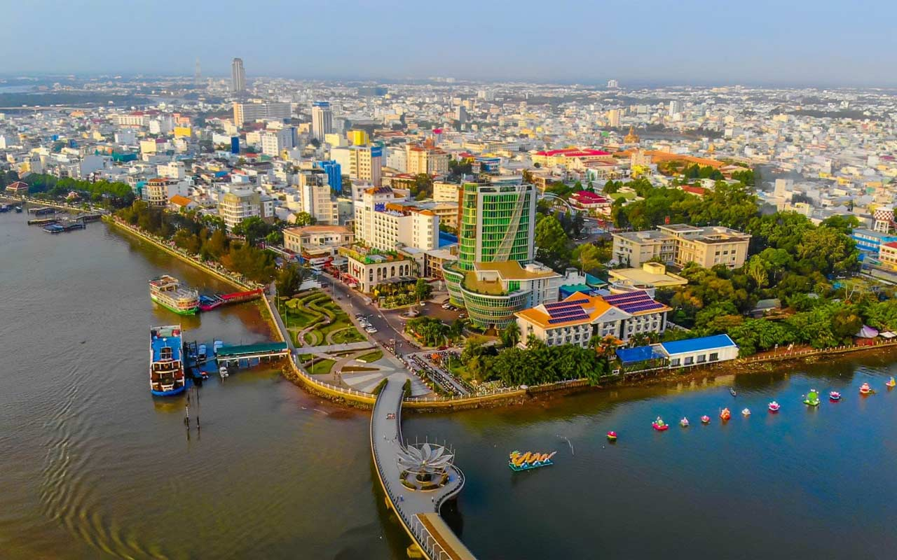
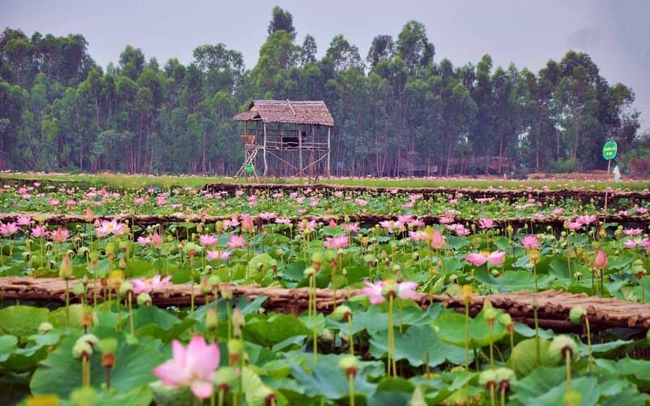
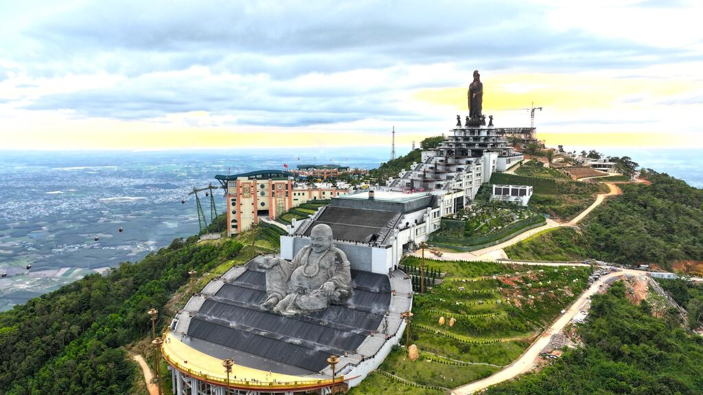
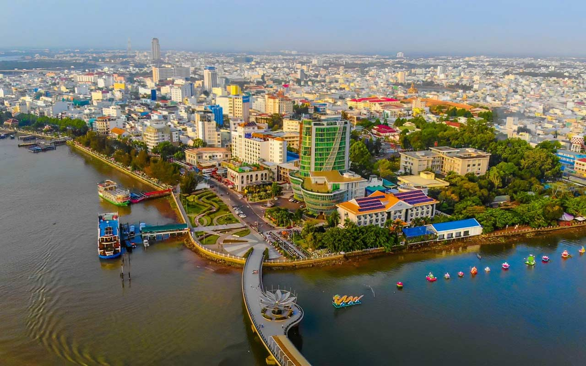
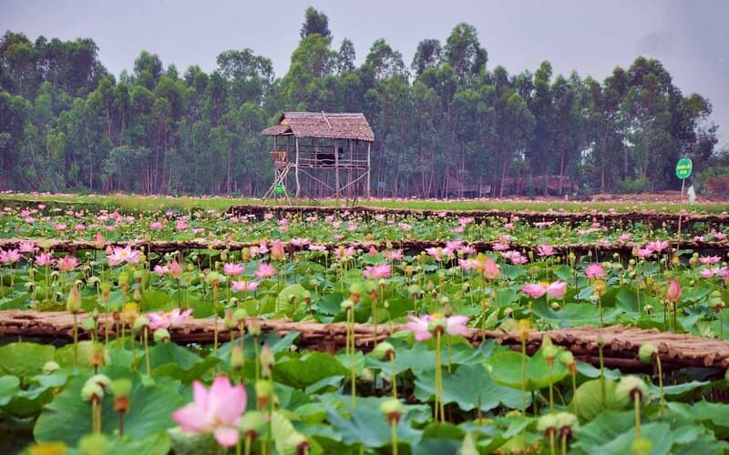
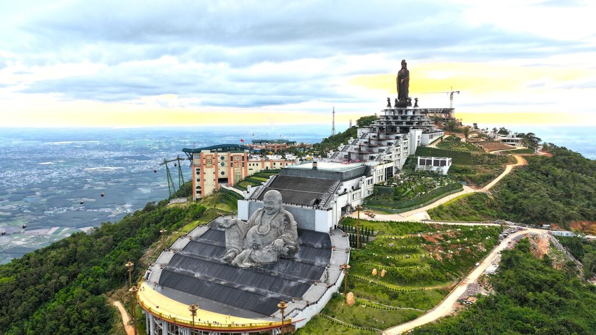
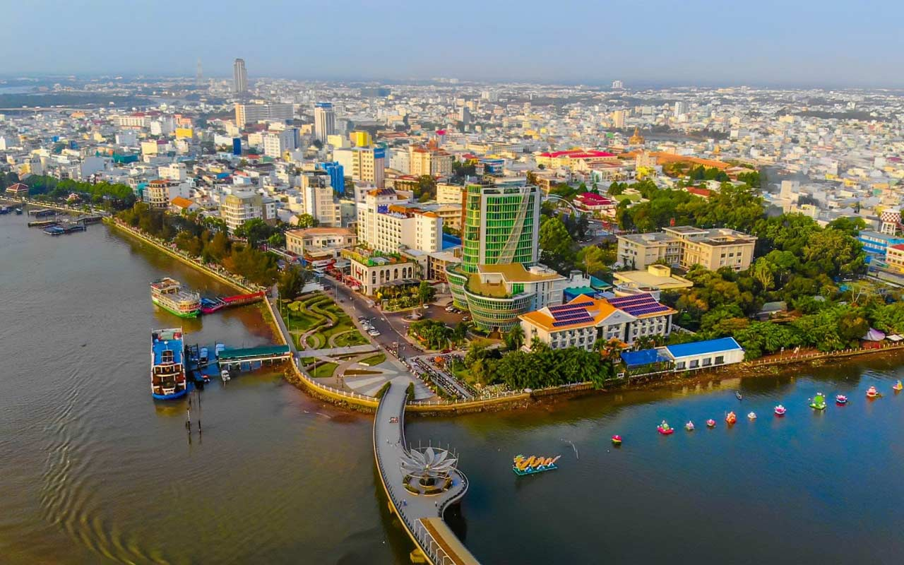
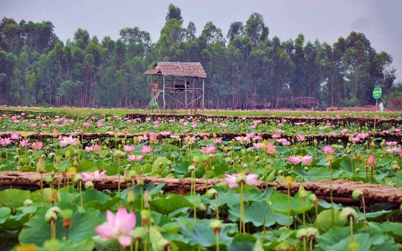
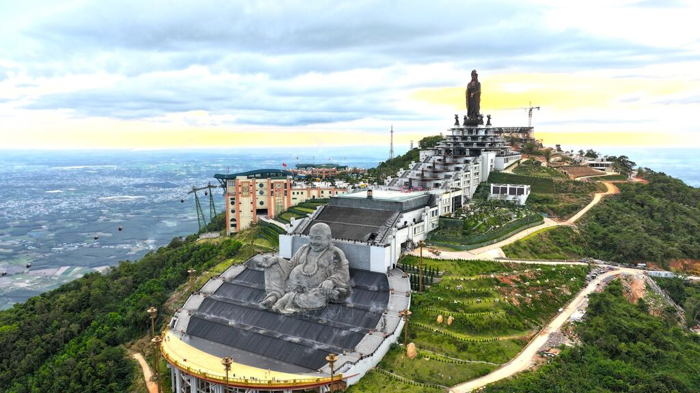
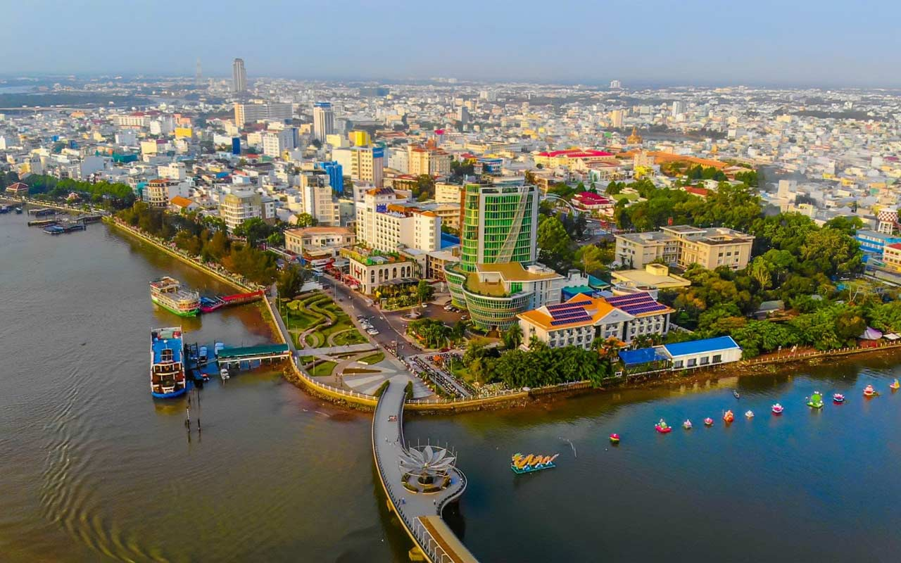
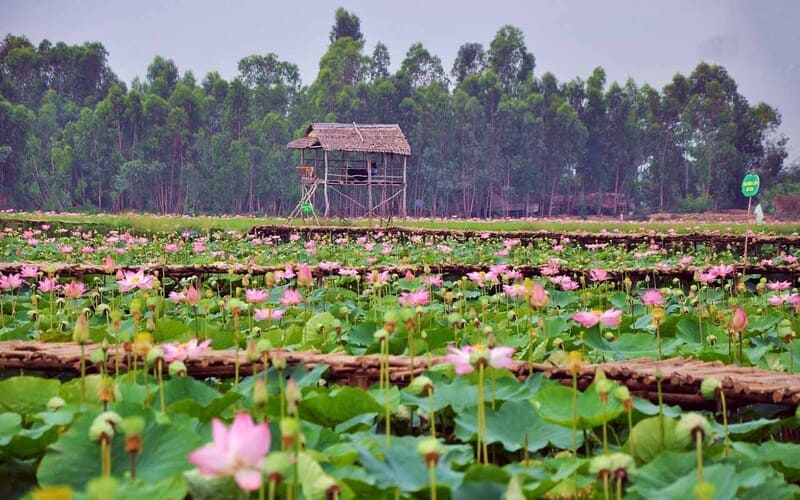
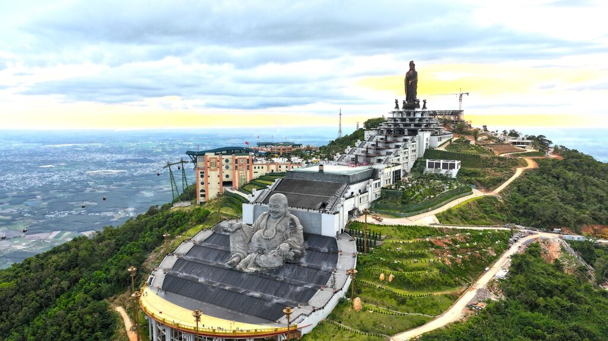

Hòn ngọc Viễn Đông sôi động.
Nóc nhà Đông Nam Bộ.

Văn hóa sông nước độc đáo.
Vùng Bảy Núi linh thiêng.
Thủ phủ hoa sen thuần khiết.
Cực Nam thiêng liêng của Tổ quốc.


An Giang
Lễ hội tâm linh lớn nhất miền Tây Nam Bộ.
Cần Thơ
Quy tụ hàng trăm loại bánh ngon Nam Bộ.
Cần Giờ, TP.HCM
Tục thờ cúng cá Voi của ngư dân ven biển.

Sóc Trăng
Lễ cúng trăng và đua ghe Ngo của người Khmer.